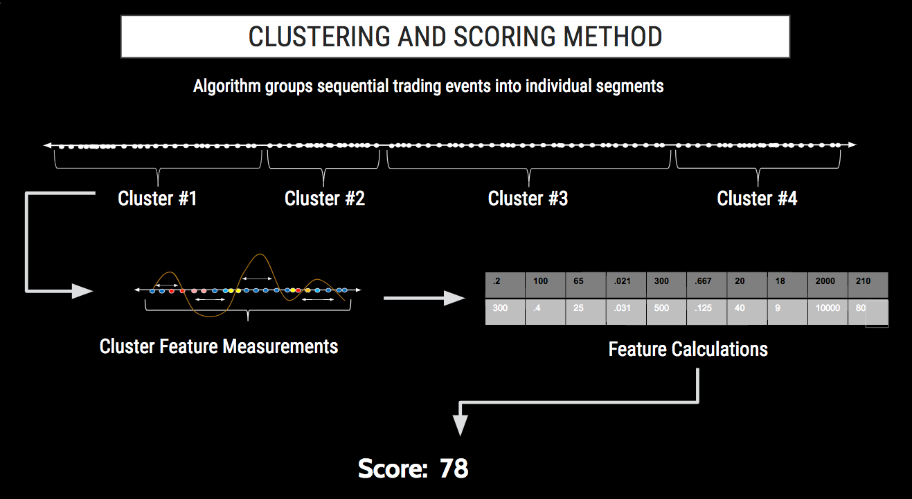

TT Score analyzes daily audit log data to identify patterns of activity similar to confirmed examples of problematic trading activity. Each of these patterns is referred to a model. From these models, TT Score generates a variety of metrics that help highlight potential areas of concern.
A cluster is a sequential series of logged activity from a trader's audit trail. These clusters are segmented based upon factors such as time, trader, financial instrument and proximity of other order actions. They can vary in length from a fraction of a second to a few minutes long and contain every recorded action by a trader.

For problematic trading patterns investigated using machine learning, the machine learning algorithm analyzes each cluster and extracts characteristics called “features,” such as the number of canceled orders or the ratio of one action to another. The algorithm builds a collection of over 30 different features and then compares this combination of features to known problematic trading patterns, such as spoofing.
The various comparisons of a cluster's features to the characteristics of known problematic trading patterns are given a numeric score. These scores are weighted, based on the likelihood that the score indicates problematic activity. The aggregation of these individual weighted scores are used to generate a single risk score on a 0 to 100 scale for every cluster.
For problematic trading patterns investigated using parameter thresholds, characteristics of clusters are measured and compared to benchmarks, such as time between orders or the number of canceled orders. For trading patterns where simply exceeding a threshold indicates the possibility of problematic activity, a pass/fail score is assigned to the cluster as either 0 or 100. Where the degree to which a cluster exceeds a threshold must be evaluated, a score between 0 and 100 is generated to indicate how far beyond a threshold the cluster was measured.